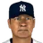

Real MLB history, mapped onto this league's franchises
Champion:  New York Giants (93-61)
New York Giants (93-61)
American League
| Team | W | L | PCT | GB | Finish | Postseason |
|---|---|---|---|---|---|---|
 New York Yankees New York Yankees | 94 | 60 | .610 | - | 1st | Playoffs |
 St. Louis Browns St. Louis Browns | 93 | 61 | .604 | 1 | 2nd | |
 Detroit Tigers Detroit Tigers | 79 | 75 | .513 | 15½ | 3rd | |
 Cleveland Guardians Cleveland Guardians | 78 | 76 | .506 | 16½ | 4th | |
 Chicago White Sox Chicago White Sox | 77 | 77 | .500 | 17½ | 5th | |
 Washington Senators Washington Senators | 69 | 85 | .448 | 25 | 6th | |
 Philadelphia Athletics Philadelphia Athletics | 65 | 89 | .422 | 29½ | 7th | |
 Boston Red Sox Boston Red Sox | 61 | 93 | .396 | 33 | 8th |
National League
| Team | W | L | PCT | GB | Finish | Postseason |
|---|---|---|---|---|---|---|
| New York Giants | 93 | 61 | .604 | - | 1st | Champion |
 Cincinnati Reds Cincinnati Reds | 86 | 68 | .558 | 7 | 2nd | |
 Pittsburgh Pirates Pittsburgh Pirates | 85 | 69 | .552 | 7½ | 3rd | |
 St. Louis Cardinals St. Louis Cardinals | 85 | 69 | .552 | 7 | 3rd | |
 Chicago Cubs Chicago Cubs | 80 | 74 | .519 | 13 | 5th | |
 Brooklyn Robins Brooklyn Robins | 76 | 78 | .494 | 16½ | 6th | |
 Philadelphia Phillies Philadelphia Phillies | 57 | 96 | .373 | 35 | 7th | |
 Boston Braves Boston Braves | 53 | 100 | .346 | 39 | 8th |
American League
Home runs
- 39
 Anderson Williams BAL
Anderson Williams BAL - 37Tillie Walker OAK
- 35

Babe Ruth NYY - 21Roughton Heilmann DET
- 21Bing Miller OAK
Batting average
- .420George Sisler BAL
- .401Ty Cobb DET
- .378Royal Speaker CLE
- .356Roughton Heilmann DET
- .335Bing Miller OAK
RBI
- 155Anderson Williams BAL
- 126Bobby Veach DET
- 109Marty McManus BAL
- 105George Sisler BAL
- 102Baby Doll Jacobson BAL
Hits
- 246George Sisler BAL
- 211Ty Cobb DET
- 207Jack Tobin BAL
- 202Bobby Veach DET
- 194Anderson Williams BAL
Runs
- 134George Sisler BAL
- 131McCall Blue DET
- 128Anderson Williams BAL
- 122Jack Tobin BAL
- 111Soler Hooper SBS
Stolen bases
- 51George Sisler BAL
- 37Anderson Williams BAL
- 25Bucky Harris MIN
- 21Richardson Johnson SBS
- 20Sam Rice MIN
On-base %
- .472Royal Speaker CLE
- .465George Sisler BAL
- .459Ty Cobb DET
- .430Roughton Heilmann DET
- .411Anderson Williams BAL
Slugging %
- .627Anderson Williams BAL
- .606Royal Speaker CLE
- .598Roughton Heilmann DET
- .594George Sisler BAL
- .565Ty Cobb DET
OPS
- 1.078Royal Speaker CLE
- 1.059George Sisler BAL
- 1.038Anderson Williams BAL
- 1.028Roughton Heilmann DET
- 1.024Ty Cobb DET
Doubles
- 48Royal Speaker CLE
- 44Del Pratt BOS
- 42George Sisler BAL
- 42Ty Cobb DET
- 37Earl Sheely SBS
Triples
- 18George Sisler BAL
- 16Baby Doll Jacobson BAL
- 16Ty Cobb DET
- 15Joe Judge MIN
- 14Matzenbacher Mostil SBS
Walks
- 89Whitey Witt NYY
- 84Babe Ruth NYY
- 82McCall Blue DET
- 77Royal Speaker CLE
- 74Anderson Williams BAL
Total bases
- 367Anderson Williams BAL
- 348George Sisler BAL
- 310Tillie Walker OAK
- 297Ty Cobb DET
- 296Jack Tobin BAL
WAR (hitters, OOTP)
- 8.1George Sisler BAL
- 7.4Anderson Williams BAL
- 7.4Royal Speaker CLE
- 7.3Ty Cobb DET
- 6.2Babe Ruth NYY
Wins
- 27Eddie Rommel OAK
- 26Bullet Joe Bush NYY
- 24Smallwood Shocker BAL
- 22George Uhle CLE
- 21Red Faber SBS
ERA
- 2.81Red Faber SBS
- 2.85Herman Pillette DET
- 2.91Bob Shawkey NYY
- 2.97Smallwood Shocker BAL
- 2.99Walter Johnson MIN
Strikeouts
- 149Smallwood Shocker BAL
- 148Red Faber SBS
- 130Bob Shawkey NYY
- 108Guillen High Minors DET
- 105Walter Johnson MIN
Saves
- 8Sam Jones NYY
- 7Hub Pruett BAL
- 5Huguet Wright BAL
- 4Dill Vangilder BAL
- 4Hooks Dauss DET
Innings
- 352.0Red Faber SBS
- 348.0Smallwood Shocker BAL
- 299.2Bob Shawkey NYY
- 294.0Eddie Rommel OAK
- 287.1George Uhle CLE
WHIP
- 1.18Red Faber SBS
- 1.21Dill Vangilder BAL
- 1.21Smallwood Shocker BAL
- 1.21Eddie Rommel OAK
- 1.26Jack Quinn BOS
K/9
- 4.5Nikolic Morton CLE
- 4.0Slim Harriss OAK
- 3.9Bob Shawkey NYY
- 3.9Smallwood Shocker BAL
- 3.8Red Faber SBS
Complete games
- 31Red Faber SBS
- 29Smallwood Shocker BAL
- 23George Uhle CLE
- 23Walter Johnson MIN
- 22Eddie Rommel OAK
Shutouts
- 5George Uhle CLE
- 4Herman Pillette DET
- 4Red Faber SBS
- 4Dixie Leverett SBS
- 4Walter Johnson MIN
WAR (pitchers, OOTP)
- 8.2Red Faber SBS
- 6.9Smallwood Shocker BAL
- 5.0Stan Coveleski CLE
- 4.8Bob Shawkey NYY
- 4.6George Uhle CLE
National League
Home runs
- 42Rogers Hornsby STL
- 26Cy Williams PHI
- 17Rico Lee PHI
- 17George Kelly SFS
- 16Zack Wheat LAD
Batting average
- .401Rogers Hornsby STL
- .354Ray Grimes CHC
- .350Fuell Low Minors PIT
- .340Santiago American Baseball League CHC
- .337Curt Walker PHI
RBI
- 152Rogers Hornsby STL
- 132Irish Meusel SFS
- 112Zack Wheat LAD
- 107George Kelly SFS
- 99Fuell Low Minors PIT
Hits
- 250Rogers Hornsby STL
- 215Fuell Low Minors PIT
- 209Toca High Minors SFS
- 207Ortiz American Baseball League PIT
- 205Jake Daubert CIN
Runs
- 141Rogers Hornsby STL
- 140Ortiz American Baseball League PIT
- 117Toca High Minors SFS
- 117Michelsen Smith STL
- 115Rabbit Maranville PIT
Stolen bases
- 51Ortiz American Baseball League PIT
- 31Frankie Frisch SFS
- 30Johnson American Baseball League CIN
- 24Fuell Low Minors PIT
- 24Rabbit Maranville PIT
On-base %
- .457Rogers Hornsby STL
- .440Ray Grimes CHC
- .406Ortiz American Baseball League PIT
- .404Fuell Low Minors PIT
- .401Santiago American Baseball League CHC
Slugging %
- .722Rogers Hornsby STL
- .572Ray Grimes CHC
- .514Cy Williams PHI
- .509Irish Meusel SFS
- .503Zack Wheat LAD
OPS
- 1.179Rogers Hornsby STL
- 1.012Ray Grimes CHC
- .903Cy Williams PHI
- .897Curt Walker PHI
- .890Zack Wheat LAD
Doubles
- 46Rogers Hornsby STL
- 45Ray Grimes CHC
- 44Pat Duncan CIN
- 41Toca High Minors SFS
- 37Santiago American Baseball League CHC
Triples
- 22Jake Daubert CIN
- 17Irish Meusel SFS
- 15Fuell Low Minors PIT
- 15Rabbit Maranville PIT
- 14Rogers Hornsby STL
Walks
- 80Ortiz American Baseball League PIT
- 79Toca High Minors SFS
- 79Reinike O'Farrell CHC
- 78Johnson American Baseball League CIN
- 75Ray Grimes CHC
Total bases
- 450Rogers Hornsby STL
- 314Irish Meusel SFS
- 302Zack Wheat LAD
- 300Jake Daubert CIN
- 300Cy Williams PHI
WAR (hitters, OOTP)
- 11.6Rogers Hornsby STL
- 6.9Ortiz American Baseball League PIT
- 5.8Ray Grimes CHC
- 5.2Cy Williams PHI
- 4.9Toca High Minors SFS
Wins
- 25
 Miliano Rixey CIN
Miliano Rixey CIN - 23Wilbur Cooper PIT
- 21Dutch Ruether LAD
- 19Art Nehf SFS
- 19Jeff Pfeffer STL
ERA
- 3.01Rosy Ryan SFS
- 3.12Pete Donohue CIN
- 3.18Wilbur Cooper PIT
- 3.29Art Nehf SFS
- 3.31Dolf Luque CIN
Strikeouts
- 134Dazzy Vance LAD
- 129Wilbur Cooper PIT
- 116Jimmy Ring PHI
- 104Johnny Morrison PIT
- 99Burleigh Grimes LAD
Saves
- 5Claude Jonnard SFS
- 4Lou North STL
- 3Tony Kaufmann CHC
- 3Al Mamaux LAD
- 3Rosy Ryan SFS
Innings
- 313.1Miliano Rixey CIN
- 294.2Wilbur Cooper PIT
- 286.1Johnny Morrison PIT
- 268.1Art Nehf SFS
- 267.1Dutch Ruether LAD
WHIP
- 1.20Ravelo Low Minors PIT
- 1.22Miliano Rixey CIN
- 1.24Pete Donohue CIN
- 1.29Camp American Baseball League SFS
- 1.29Grover Cleveland Alexander CHC
K/9
- 4.9Dazzy Vance LAD
- 4.2Jimmy Ring PHI
- 4.0Tiny Osborne CHC
- 3.9Wilbur Cooper PIT
- 3.6Bill Doak STL
Complete games
- 27Wilbur Cooper PIT
- 26Miliano Rixey CIN
- 26Dutch Ruether LAD
- 20Rushton Aldridge CHC
- 20Art Nehf SFS
Shutouts
- 5Dazzy Vance LAD
- 5Johnny Morrison PIT
- 4Ravelo Low Minors PIT
- 4Wilbur Cooper PIT
- 3Bill Sherdel STL
WAR (pitchers, OOTP)
- 6.2Miliano Rixey CIN
- 6.2Wilbur Cooper PIT
- 5.0Pete Donohue CIN
- 4.9Grover Cleveland Alexander CHC
- 4.7Dolf Luque CIN
From players_league_leader.csv (top five shown, ties included as stored). The file's category codes are unlabeled; the site shows only the categories it could match to season stat lines. The team logo is the player's franchise that season (most games).
Most Valuable Player
| League | Pos | Player | Team |
|---|---|---|---|
| American | George Sisler | Baltimore Orioles |
Award codes in players_awards.csv are unlabeled; names were matched from the winners (e.g. 2001: Bonds and Ichiro for code 5, Randy Johnson and Clemens for code 4, Ichiro and Pujols for code 6, Rivera and Benitez for code 13, Johnson and Schilling for code 15). Code 7 is the Gold Glove and code 11 the Silver Slugger (one per position); code 9 is the All-Star selections.
No All-Star selections in the export for this season (the record starts in 1933).
Seasons before 2002 are real MLB history from the OOTP export, mapped by OOTP onto this league's 30 original franchises (club names are as they were in that season). 2002 is this universe. Player names are as the export stores them (apart from a few renamed in this universe since this dump, such as Babe Ruth): OOTP gives some historical players generated names (the 586-homer career is filed under “Legendre Robinson”), and the site keeps them. Every player links to a page: 2002 players to their season pages, everyone else to a historical career page.